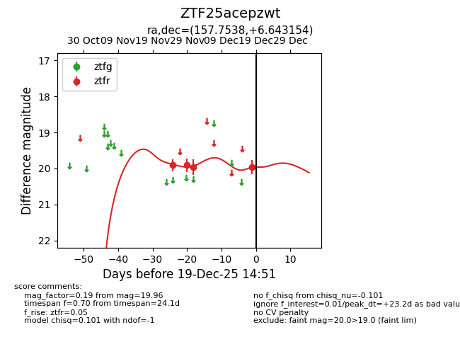
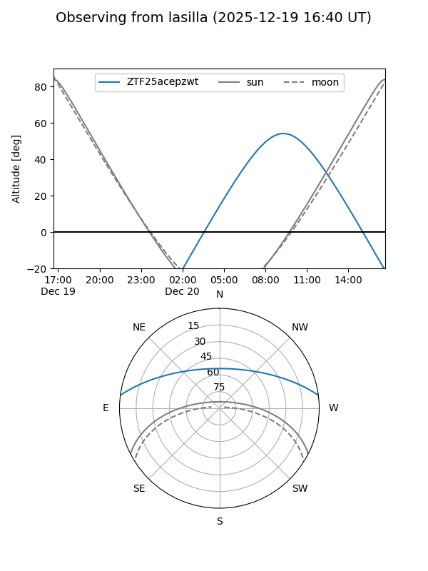
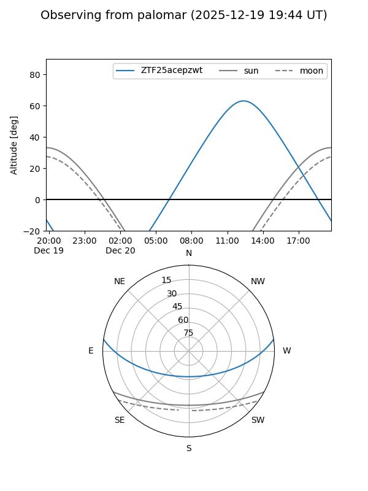
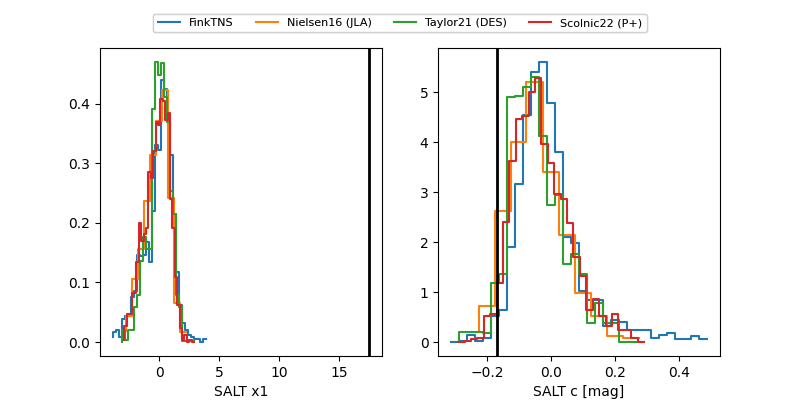

ZTF25acepzwt
Target ZTF25acepzwt at 2025-12-18 13:18
Aliases and brokers:
FINK: fink-portal.org/ZTF25acepzwt
Lasair: lasair-ztf.lsst.ac.uk/objects/ZTF25acepzwt
ALeRCE: alerce.online/object/ZTF25acepzwt
alt names
ZTF25acepzwt (ztf,fink_ztf)
Coordinates:
equatorial (ra, dec) = 157.7538,+6.64315
equatorial (HMS+DMS) = 10:31:00.92,+06:38:35.36
galactic (l, b) = (238.0314,+50.89173)
Photometry
last ztfr=19.96
4 ztfr detections
Lightcurve

Visibility


Additional plots
